Bulk Actions¶
Budget Blitz for Android admits to make actions under the set of objects. For example you can change a category in several transactions at once. Bulk actions are supported by any directories too.
Objects Selection¶
In the example below you can see multiply selection at the transactions list. Same actions can be done in any directory.
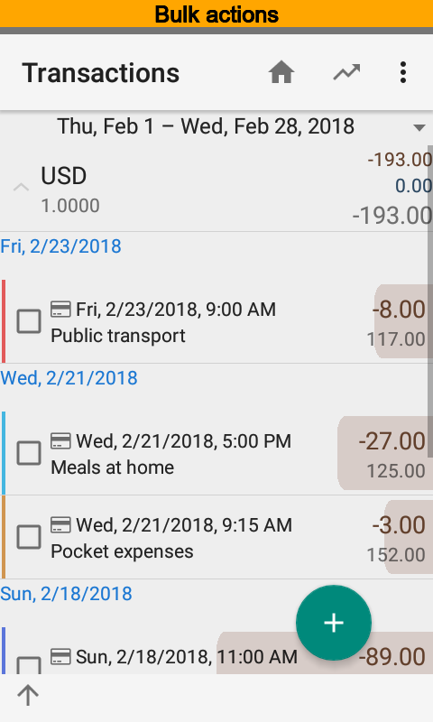 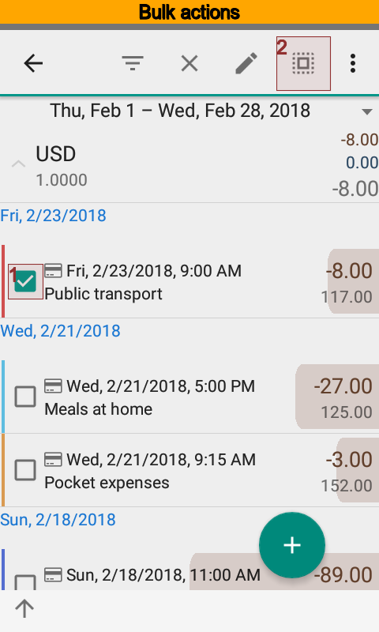 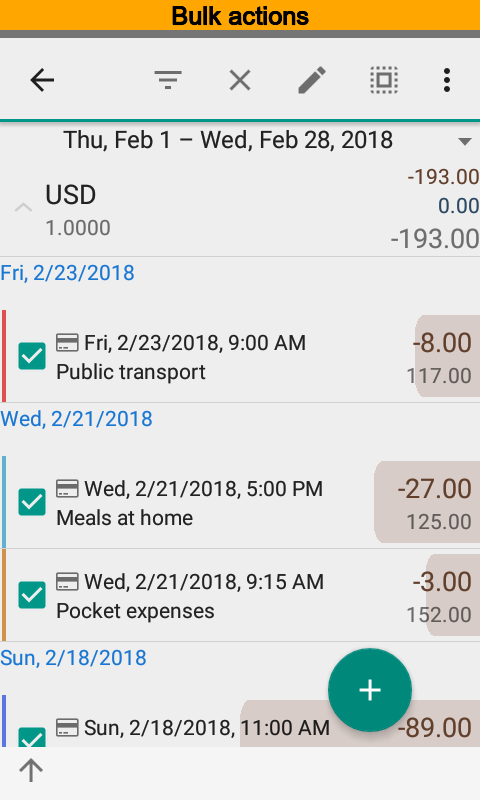{kind=link}
{kind=link}
{kind=link}
Open transactions list first of all. Then select required transactions. To select all transactions just select one and press from the top menu.
Editing¶
Press button to edit selected transactions. You will see the dialog that contains amount of objects and properties available to change. Modifications are applied only for changed properties.
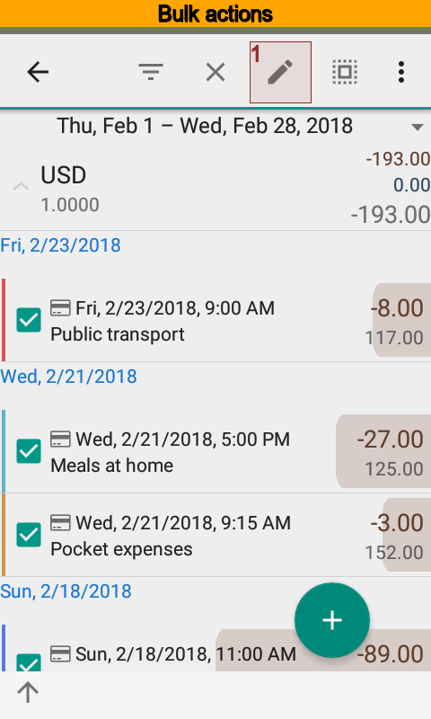 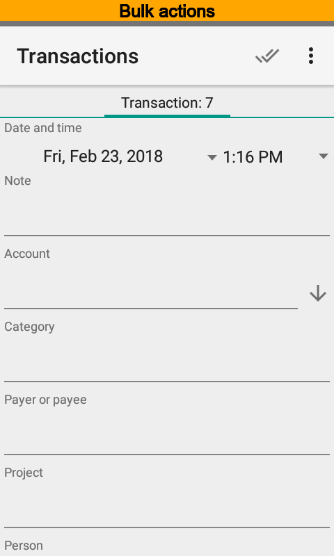{kind=link}
{kind=link}
Deleting¶
Press to delete selected transactions. Since confirmed the app will delete selected items.
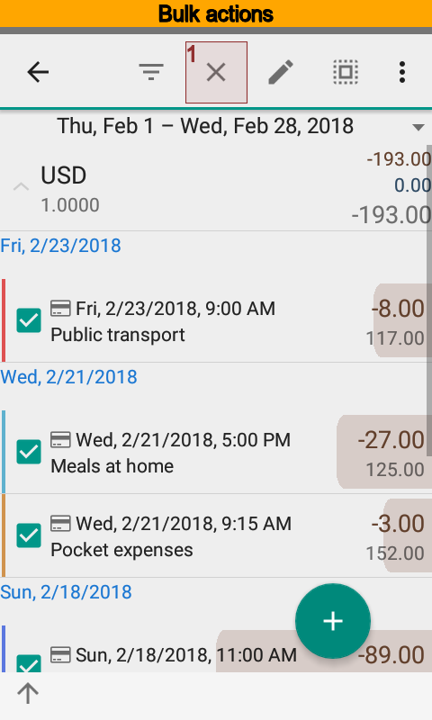 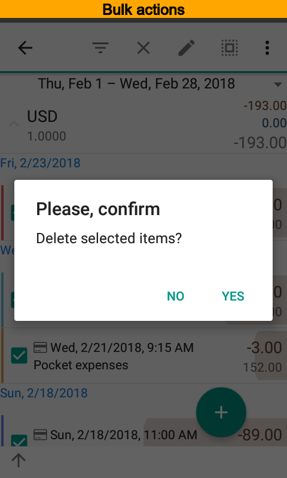{kind=link}
{kind=link}
Filters¶
You can make a filter based on selected items. It is convenient when you want, for example, to see all transactions with the same dimensions as selected ones.
Press to make a filter.
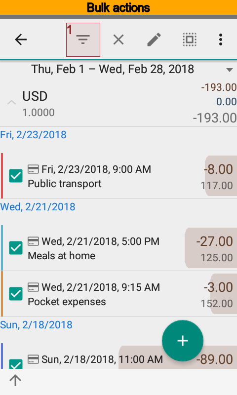 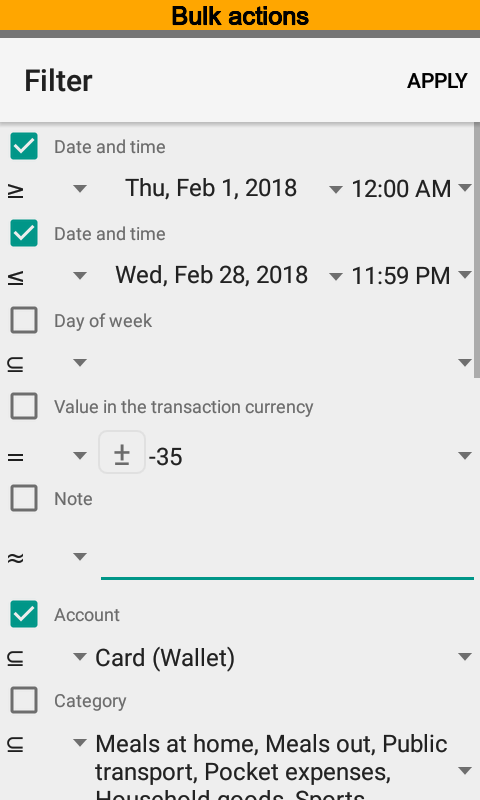{kind=link}
{kind=link}
Repetitive Sending Under Teamwork¶
Sometimes there would be a necessity to send transaction or directory item again when teamwork used. Press menu item to do that.
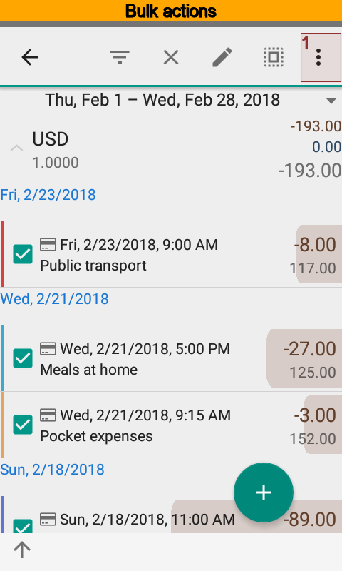 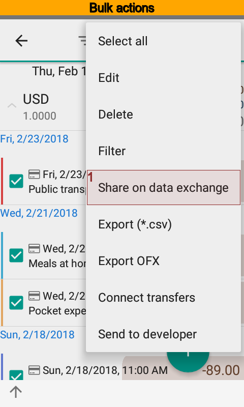 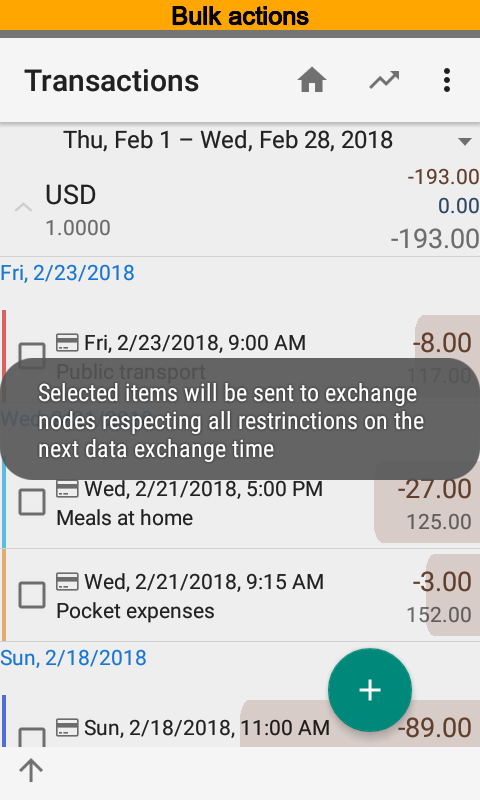{kind=link}
{kind=link}
{kind=link}
CSV and OFX Export¶
You can export selected transactions to CSV and OFX files. Press and to do that. In contrast to transactions directory items can be exported to a CSV file only.
Note
Export transaction to an OFX file is available in the Pro version only.
{kind=link}
{kind=link}
{kind=link}
Connecting of transactions¶
Sometimes one wants to additionally connect transactions to have a real transfer. For a example, you may want to connect two separate transactions when transfer was created by hands or as a result of an import. To get transactions connected just check at least one transaction and run the operation and the app will find and connect complement transactions automatic.
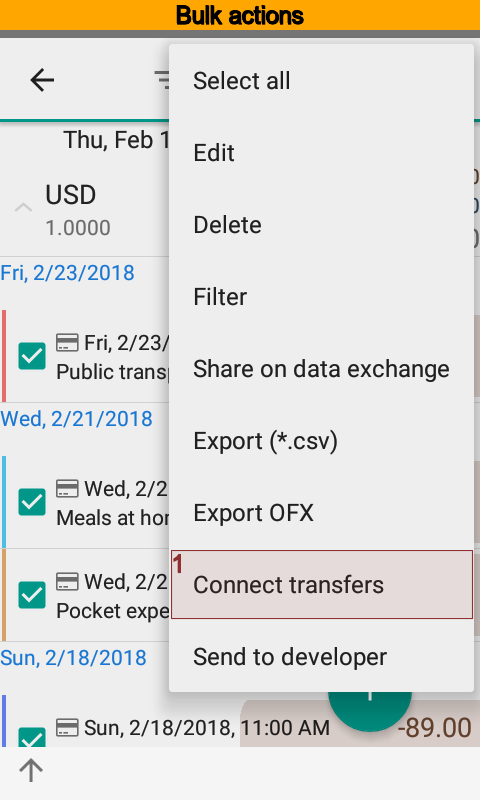{kind=link}
Note
Starting from the version 6 both transactions are automatic connecting when transfer is made by hands, thus there is no need to additionally connect these transactions. Connecting transactions are marked by a special icon.
Sending Source Data to Developer¶
Sometime you need a help to understand what is going on in the app. Usually in order to get a help it is required to show source data to the developer.
Press menu item to send select objects. You will see a letter before sending, so you will be able to edit some data.
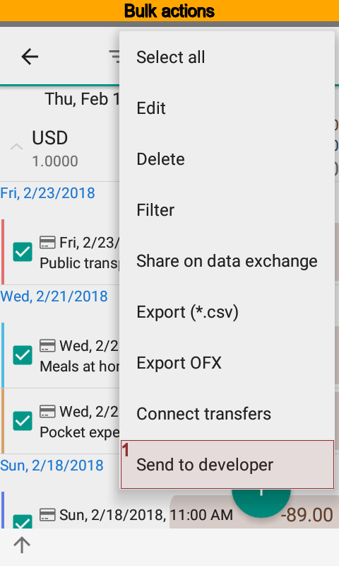 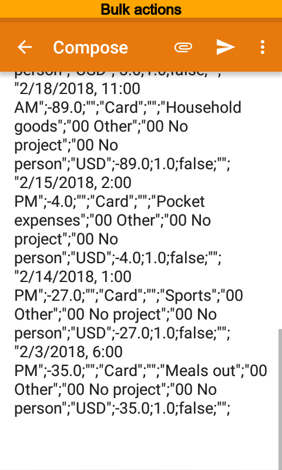{kind=link}
{kind=link}